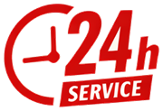
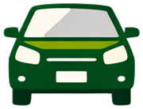

車検・整備・カスタムから、レッカー・ロードサービスまで。「こんなこと頼める？」も、まずは気軽にひと声。故障やトラブルは24時間対応、代車・レンタカーもご用意しています。
車・バイクの突然のトラブルも、24時間対応で駆けつけます。まずはお気軽にご連絡ください。
緊急のご相談・レッカーは、お電話で。
電話でお問い合わせ車のことならひと通りお任せください。「これってお願いできる？」も大歓迎です。

急な故障やトラブルも24時間対応。レッカー・ロードサービス（任意保険対応可）で、動けなくなった車もすぐ駆けつけます。

修理や車検で車を預ける間も、代車・レンタカーをご用意。日常の足を止めずに安心してお任せいただけます。
「どこに頼めばいいか分からない」も大丈夫。車検・整備からカスタム・買取まで、まとめて相談できる地元の車屋です。
作業の様子や入庫車両、カスタム事例などを発信中。気になることはDMからお気軽にどうぞ。
@sakimoto_vehicleserv ／ 自動車関連サービス・長崎県諫早市
長崎県諫早市多良見町を拠点に、近隣エリアへ出張・レッカー対応します。詳しい所在地はご連絡時にご案内します。
| 拠点エリア | 長崎県諫早市多良見町（周辺エリア対応） |
|---|---|
| 対応内容 | 車検・整備・カスタム・洗車磨きコーティング 新車中古車販売・買取・レッカー・ロードサービス |
| 出張・レッカー | 故障・トラブル時は出張対応可。ロードサービスは任意保険対応可。 |
| 受付時間 | 9:00〜19:00（変更の場合あり） ／ 故障・トラブルは24時間対応 |